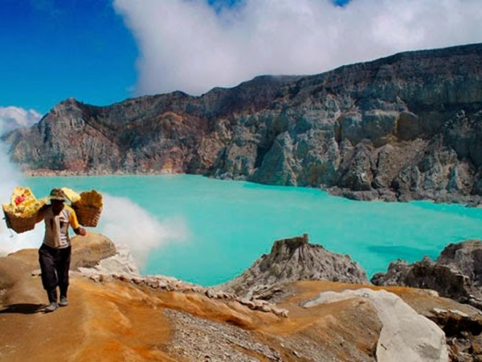
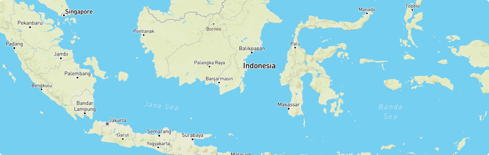

Liburan & nikmati tempat baru di Indonesia
Destinize membuat kamu selalu update terkait tempat liburan baru di Indonesia dengan mengikuti perkembangan para influencer di sosial media ✨
Mulai sekarang!Temukan Destinasi Favoritmu

CARI TEMPAT WISATA
Cari Tempat Wisata Didekatmu
Fitur ini memungkinkan kamu untuk mencari tempat wisata atau tempat yang sedang populer di daerah kamu dengan begitu kamu akan selalu update dan gak kudet lagi 👍🏻
